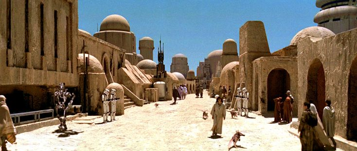
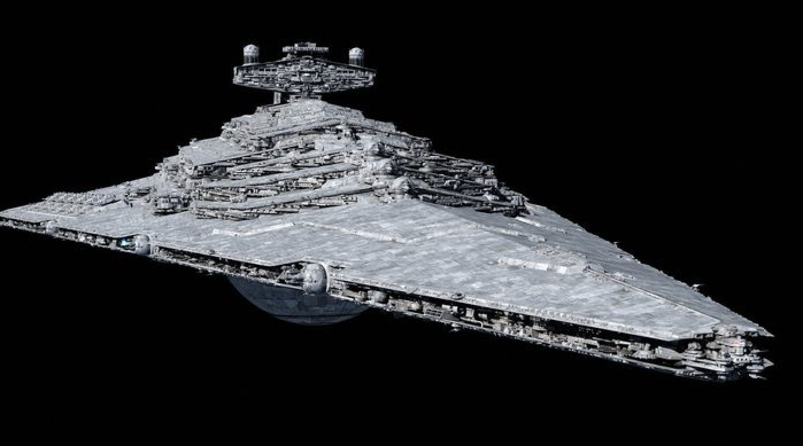

Планеты и корабли
1. Татуин
Татуин — пустынная планета, известная своими песчаными просторами и двумя солнцами. Здесь вырос Люк Скайуокер, а также родился Энакин Скайуокер, который впоследствии стал Дартом Вейдером.

2. Другие планеты
- Хот: ледяная планета, где находилась база повстанцев.
- Эндор: лесистая луна, рядом с которой произошла решающая битва с Империей.
- Корусант: огромный городской мир, бывший центром Галактической Республики.
3. Космические корабли
- Тысячелетний сокол: знаменитый корабль Хана Соло.
- Истребитель X-wing: боевой корабль Альянса повстанцев.
- Звёздный разрушитель: крупный военный корабль Галактической империи.
